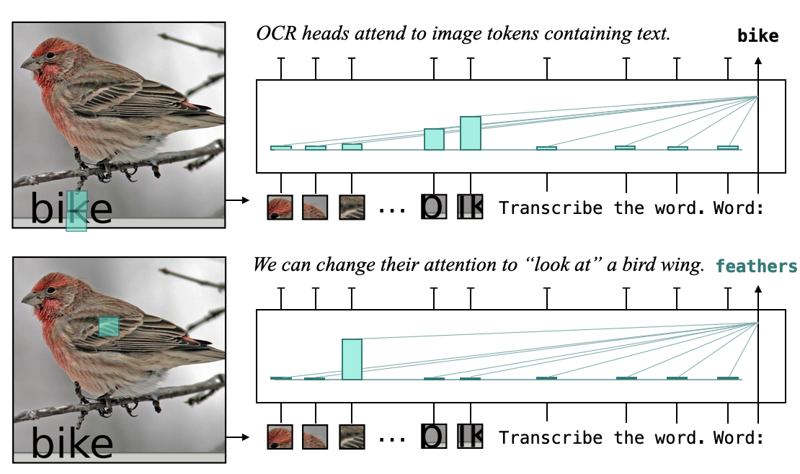
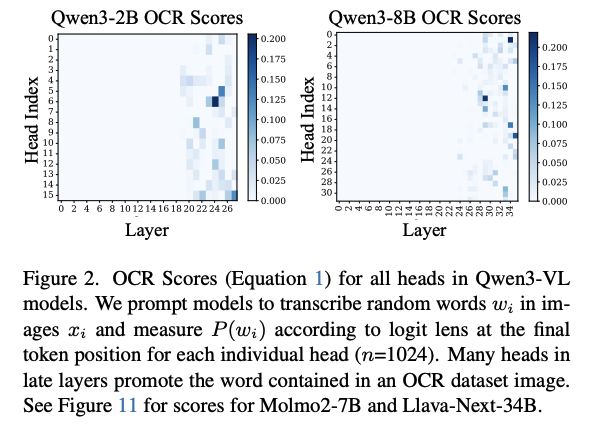
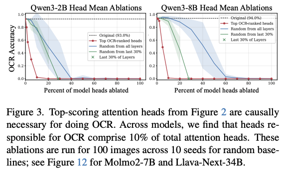

In this work, we identify attention heads in vision-language models (VLMs) that are responsible for OCR, which is the task of "reading" text in images. But these heads turn out to be useful for visualizing semantics of image tokens in general!

Specifically, we find a set of attention heads in Qwen3-VL-8B-Instruct that, e.g., attend to the word "bike" when prompted to transcribe a word. If we redirect the attention patterns of these heads to different parts of the image, the model will actually verbalize more general information, like "feathers." We use this surprising finding to create a new method that helps us visualize how a VLM might understand the semantics of a particular image, called verbalization lens.
Interactive Demo: Click Around Real Images
Here are some real examples of verbalization lens pre-computed for a few natural images.
Each square in an image corresponds to a single image token passed to the VLM. We can apply our lens to any of these tokens at any hidden layer. Compared to a naive logit lens baseline, you can see that our approach reveals information about a wide range of image tokens starting from the very first hidden layer. Interestingly, we find that Qwen models have much more Chinese labels, likely because they are Chinese models.
Words are shaded by their softmax probability (darker = higher). Hover over a word to show the exact probability.
Finding Verbalization Heads
How do we actually find these attention heads? We generate a dataset of images with random words in them, and then prompt a VLM to "Transcribe the word in this image." This is a simple optical character recognition (OCR) task. Then, we look for attention heads at the last token position that are promoting the given word. Specifically, we take the output of each attention head and use logit lens to obtain the probability of the desired word in that attention head's output. Averaging these probabilities across many images, we can obtain an "OCR score" for each attention head. If we then progressively knock out the top percentage of heads based on these scores, we find that they seem to comprise about 10% of attention heads across the four models we study.


Creating our Lens
Our Figure 1 shows what happens when we literally change the attention maps of all verbalization heads to be concentrated on a single token, and then run a full forward pass for Qwen3-VL-8B-Instruct. However, in practice, we actually do something more efficient. Repurposing a method from our previous work on language-only models, we collapse the weights of all of these attention heads into a single matrix \(\mathbf{L} \in\mathbb{R}^{d_{\text{model}}\times d_{\text{model}}}\), which looks like:
\[
\mathbf{L} = \sum_{(l,h)\in\mathcal{H}} \mathbf{W}_O^{(l,h)}\mathbf{W}_V^{(l,h)}
\]
where \(\mathbf{W}_O\in\mathbb{R}^{d_{\text{model}}\times d_{\text{head}}},\mathbf{W}_V\in\mathbb{R}^{d_{\text{head}}\times d_{\text{model}}}\) are the output and value weight matrices for a particular attention head \(h\) at layer \(l\), and \(\mathcal{H}\) is the set of verbalization heads we study in this work.
But why are we multiplying these weights together? Elhage et al. (2021) refer to \(\mathbf{W}_O^{(l,h)}\mathbf{W}_V^{(l,h)}\) as the "OV matrix" for a given attention head. The intuition for one of these matrices is that it determines exactly what head \((l,h)\) will write when attending to a particular hidden state. It lets us ignore the attention pattern of the head and focus on what that head actually reads and writes.
So, what does it mean to sum together these OV matrices?
Let's say that we have a particular residual stream state \(\mathbf{h}^{(l-1)}\in\mathbb{R}^{d_{model}} \) at layer \(l-1\), and we decide to make all of the \(n\) attention heads at layer \(l\) fully attend to only this hidden state. Then, the contribution of all of these attention heads will look something like this (dropping norms):
\[
\mathbf{W}_O^{(l,0)}\mathbf{W}_V^{(l,0)}\mathbf{h}^{(l-1)} + \mathbf{W}_O^{(l,1)}\mathbf{W}_V^{(l,1)}\mathbf{h}^{(l-1)} + ... + \mathbf{W}_O^{(l,n)}\mathbf{W}_V^{(l,n)}\mathbf{h}^{(l-1)}
\]
But then, we can see that this is equivalent to just summing together all the OV matrices first, and multiplying by \(\mathbf{h}^{(l-1)}\) only once.
\[
(\mathbf{W}_O^{(l,0)}\mathbf{W}_V^{(l,0)} + \mathbf{W}_O^{(l,1)}\mathbf{W}_V^{(l,1)} + ... + \mathbf{W}_O^{(l,n)}\mathbf{W}_V^{(l,n)})\mathbf{h}^{(l-1)}
\]
Thus, adding together all of these matrices is actually very natural, at least when heads are in the same layer. The one wrinkle is that we actually make the choice to sum together OV matrices for heads across different layers. This means that, in effect, we are allowing heads at e.g., layer 24 attend to hidden states from layer 0. While this may seem odd, it seems to work well in practice, which corroborates evidence from prior work showing that layers are somewhat interchangeable in LLMs (Todd et al., 2024, Lad et al., 2025).
Once we have this matrix \(\mathbf{L}\), we can apply it to any hidden state \(\mathbf{h}\) to reveal what all the attention heads in \(\mathcal{H}\) would output if they were to fully attend to that state. We then simply apply logit lens to \(\mathbf{Lh}\) instead of "raw" logit lens on \(\mathbf{h}\) to obtain the results shown in this work.
While this is conceptually similar to redirecting attention heads in a real forward pass, it is much more computationally feasible, as we only need to cache activations from one forward pass, rather than running a separate intervened pass for every image token. The other advantage is that we can observe how information evolves across layers, showing us that information is often already present in layer 0.
Editing Image Perception
To show that our lens \(\mathbf{L}\) is reading from features that causally effect the model's outputs, we edit within the subspace read by these verbalization heads, and find that these edits affect model descriptions of images. For example, we can "edit" an image representation to cause Qwen to describe a photo of an ant as an iPod. On a high level, our approach uses the inverse of our verbalization lens to identify directions in activation space that the model decodes as a particular token. We can then subtract the latent vector that corresponds to "ant" from the image, and add in the latent vector corresponding to "iPod".
Nostalgebraist. interpreting GPT: the logit lens. 2020.
This post first introduced the idea of logit lens, applying the LLM decoder head to intermediate hidden states. They found that it revealed a surprising amount of intermediate information about GPT's internal computations.
This work is currently under review. It can be cited as follows:
bibliography
Sheridan Feucht, Benno Krojer, Sarah Wang, Henry Abrahamsen, Byron Wallace, and David Bau. "Using OCR Heads to Verbalize Image Semantics." arXiv:2609.18823 (2026).
bibtex
@article{
feucht2026ocr,
title={Using OCR Heads to Verbalize Image Semantics},
author={Sheridan Feucht and Benno Krojer and Sarah Wang and Henry Abrahamsen and Byron C. Wallace and David Bau},
journal={arXiv preprint},
year={2026},
url={https://arxiv.org/abs/2609.18823}
}